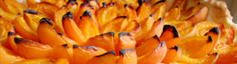

Aprikosenwähe
6 von 6auf den blätterteig wenig gemahlene mandeln geben, halbierte abrikosen darüber verteilen. mit zucker bestreuen und bei ca. 200 grad eine halbe stunde backen. mit rahm servieren.

auf den blätterteig wenig gemahlene mandeln geben, halbierte abrikosen darüber verteilen. mit zucker bestreuen und bei ca. 200 grad eine halbe stunde backen. mit rahm servieren.

Montagsplausch Nr. 58. Der Abend hiess «straussensteak».